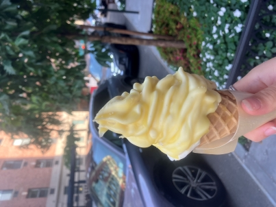

I coded this Website myself! I'm hoping it goes well and looks nice.
I wanted to write about something important to me, so the rest of this page is dedicated to reviewing desserts that I have a picture of on my phone

I could have sworn that I had a photo of this on my phone, but since I can’t find it, here is a picture of a butter vanilla soft serve from the same place, which looks very similar but without the elote seasoning on top and the fancy toothpick with the lime wedge.
I got this on this one from a bakery near my work. I passed by it, saw a sign that said “Elote Soft Serve” and then went in a got one. It’s very yummy, especially with lime squeezed on it, but the lime juice gets absolutely everywhere. There’s a thin shell around the outside that is very buttery but you need to eat through it quickly because the soft serve WILL start melting out from underneath. The first time I got this, the woman gave me a cup that I put the whole cone into upside down and ate with a spoon. The second time they didn’t offer a spoon and I wanted to see how the typical Soft Serve Experience would go. It was a mess. The THIRD time I got it I asked for a lot of napkins.
Mimi’s is another place I pass while walking to the train station. Most days it has a line going out the door and around the block. I walked past it for months wondering what the big deal was. I mean, the last time anyone was this excited for frozen yogurt was 2011. Could it really be that could? Then one rainy day the line was short! Inside the store even! It still took like 10 minutes to get to the front but compared to usual? That’s nothing! So I went in. The inside was very sleek and had the kind of acoustics that makes you realize how little interior designers are thinking about acoustics. Walking toward the front of the line makes you feel a little bit like you’re on an airplane or a rocket ship (with round “windows” and everything). There’s a very nice person at the front of the line that will give you samples of whatever you want, but you have to eat them quickly because then it’s your turn at the levers and alllll these people are waiting behind you. I got mango and raspberry because they seemed like the Special Flavors (turns out I was right, they’re the seasonal flavors). Even though Mimi’s is trying very hard to bring a different vibe than your 2011 Sweet Frog, they at least understand what fro-yo is all about: absolutely loading your bowl with toppings until its over flowing. I got mango flavored popping boba and mochi and chocolate chips. They also had Oreos and cookie dough and quite a lot of fruit, but fruit is NOT a dessert, no matter what adults tried to tell you when you were a kid. Anyway, I got my yogurt and it was delicious! Very creamy and the mochi makes it top notch! But beware: if you are a True fro-yo connessiour you may run into some trouble at the weighing station. Turns out frozen yogurt is heavy, and so are all the toppings. And Mimi’s charges XXX per ounce! Per ounce! And with all my toppings plus tip I paid like $20!(and of course I gave a tip, they let me try like every flavor, also, I’m not a selfish psychopath, so I would have tipped anyway) but still! $20! For a special treat! It’s practically criminal! I know inflation is up and the economy is bad and New York prices are sky high but oh my god! It was like 50 cents when I was menacing the Pinkberry at the mall in 2016, and you’re telling me its over double that? I mean,is it dusted in gold? Is it made from diamonds?? I’m never gonna own a house20 american dollars for frozen yogurt my god
I got these from a place before seeing a movie with friends. There were three of us and three of them. This was the first good thing to happen to me that day, which had otherwise included riding the train for an hour to do an hour long shift in Brooklyn, and struggling with grad school enrollment, and the associated concerns with What I’m Doing With My Life. I had realized like an hour earlier that I was going to miss the deadline for requesting a prorated scholarship, and my phone absolutely would not let me access the form. Luckily my friend (who was also the one to order them) was starting her new job that week and had her laptop with her, effectively Saving My Life. These were served warm, chewy on the outside and had some sort of sweet creaminess in the middle. We didn’t actually have time to eat them at the restaurant, so we boxed them up and smuggled them into the theater. I can confirm that they taste good while watching Hugh Jackman play a murder victim in Sheep Detectives. However, because the theater was dark I had no real idea of what I was eating. It was still warm though.